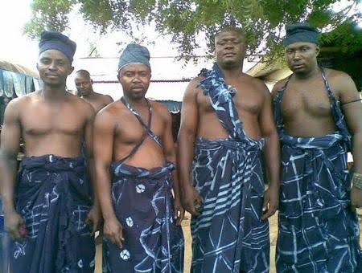

“Preserving the functional music traditions of Wukari.”
Rooted in the historic city of Wukari, Taraba State, the Jukun people — descendants of the great Kwararafa Empire — hold a heritage deeply intertwined with music and dance.
These are not performances staged for an audience; they are functional traditions used to communicate with nature, mark the harvest, and hold the community together across generations. JukunVR brings these endangered rhythmic and melodic traditions to a global audience, exactly as they are danced at home.
Recorded spatially in Wukari for true immersion.
Real movements from traditional Jukun dancers.
The dance at the centre of the app — danced at the court of the Aku Uka, carrying the weight and colour of royal ceremony.
A functional tradition tied to the community's relationship with the land and the rhythms of the farming year.
Danced to unite the community, carrying the melodic vocabulary passed down through the Kwararafa lineage.
The Puje Festival is where these dances are seen at their fullest — a harvest celebration that brings the Jukun community together around the music, the colour, and the history it carries.
JukunVR's festival-grounds environment is built from this setting, so the context around the dance is preserved along with the movement itself.